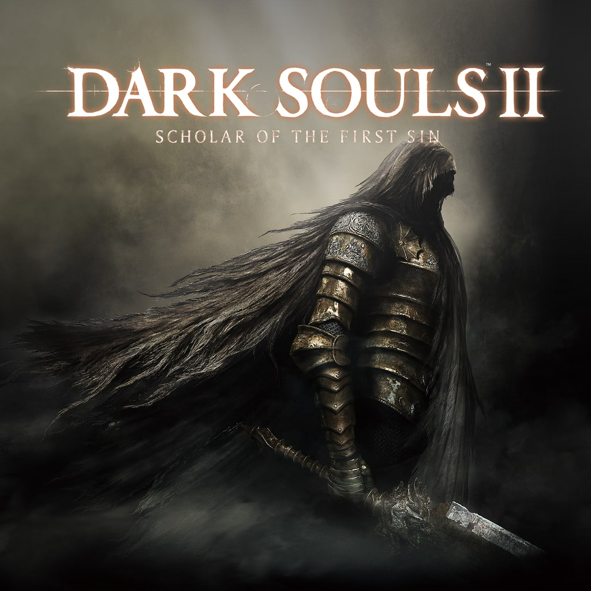

Dark Souls II: Scholar of the First Sin
Lançado em: 7 de Abril, 2015
Plataformas: PlayStation 4, PlayStation 3, Xbox One, PC, Xbox 360
Sobre: Dark Souls II: Scholar of the First Sin é um jogo do gênero RPG de ação e fantasia sombria produzido pela empresa japonesa FromSoftware. O jogo é a versão remasterizada do Dark Souls II lançado originalmente para Xbox 360 e PlayStation 3. A inédita edição de Xbox One e PS4 e PC inclui todos os conteúdos adicionais, além de melhorias visuais e mudanças significativas no posicionamento dos inimigos para estender a longevidade da jogatina.
Os combates estão mais responsivos e a movimentação do personagem aparenta ser mais solta, bem como o deslocamento dos adversários. Os efeitos de iluminação também chamam atenção, com tochas que iluminam a escuridão mórbida e criam impressionantes projeções de sombras.
Junto de Dark Souls III é uma das melhores indicações para quem quer começar no gênero "Souls Like".